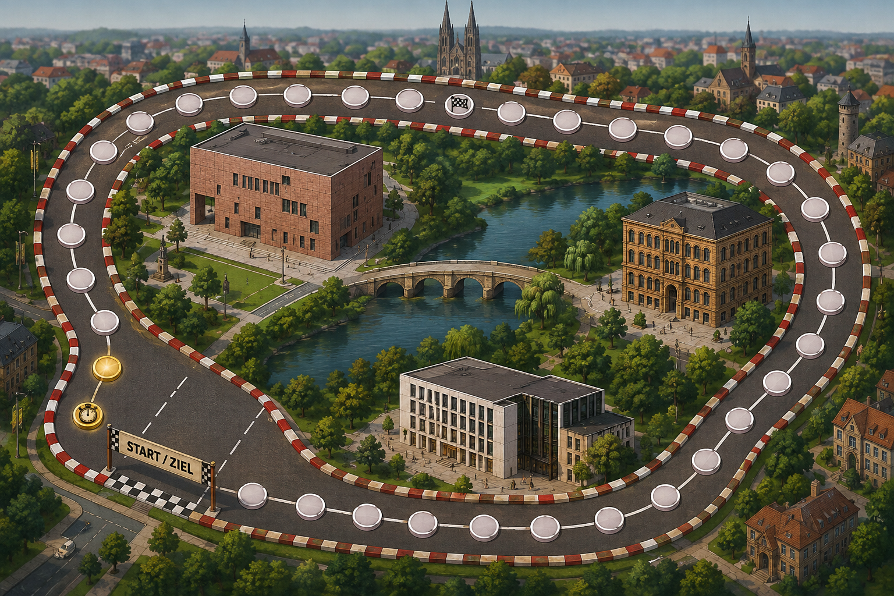

Gebäude oben auswählen, dann auf eine leere Stelle im Bild klicken, um einen neuen Punkt ans aktive Polygon anzuhängen —
bestehende Punkte lassen sich direkt per Ziehen verschieben. Der rote Stern ist der Ankerpunkt (Fußpunkt der Wild Card);
„Anker-Modus" umschalten, um ihn statt eines Polygon-Punkts zu setzen/verschieben. Unten steht laufend der fertige
LIBRARY_BUILDINGS-Code bereit zum Kopieren.
